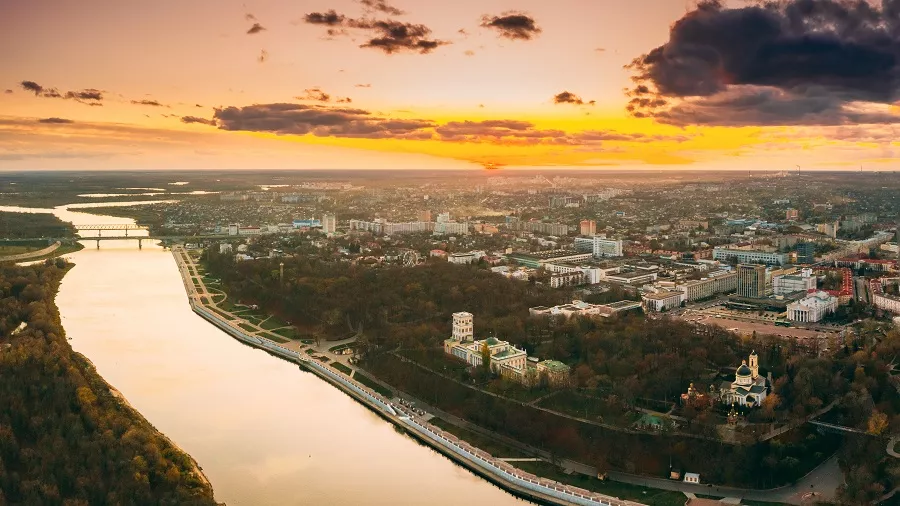

КАК ИГРАТЬ?
Этот дневник попал к тебе не просто так. В нем зашифрован уникальный маршрут по самым интересным, мистическим и красивым точкам нашей области.

Твоя задача:
1. Двигайся по локациям области.
2. Ищи подсказки на зданиях и табличках.
3. Вписывай найденные ответы в книгу.
4. ВАЖНО: В каждой загадке указано, какую по счету букву из ответа нужно запомнить. Выписывай их — они понадобятся для расшифровки Главной Тайны в конце книги!